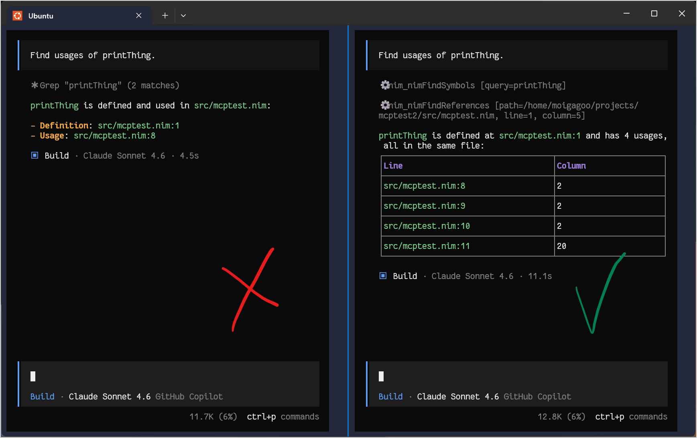

Nim Language Server
nimlangserver is a language server for Nim. It can run in two modes:
- LSP server — provides Nim language intelligence to editors and IDEs (VSCode, Neovim, Helix, Emacs, and more).
- MCP server — exposes Nim-aware tools to AI coding agents (GitHub Copilot, Claude Code, Gemini, and more).
LSP is the default mode. Running nimlangserver is equivalent to nimlangserver --lsp.
Demo
LSP:

MCP:

Installation
nimlangserver requires Nim >= 1.6.8 and nimble >= 0.16.1.
From Nimble (recommended)
Install the latest release into $HOME/.nimble/bin:
nimble install -g nimlangserver
From source
Clone the repository, then install:
nimble install -g
Or build the binary without installing it:
nimble build
Set up your development environment in WSL — clone and edit your projects inside the WSL file system.
If you use VSCode, use it with the WSL extension. Run terminal-based editors like Neovim or Helix directly in the WSL shell.
Even though nimlangserver works on native Windows, you will get better performance and stability in WSL mode.
Once installed, connect your editor by following the LSP server setup instructions, or give your AI coding agent semantic Nim understanding by following the MCP server setup instructions.
LSP Server
nimlangserver implements the Language Server Protocol (LSP) and provides Nim language intelligence to editors and IDEs. LSP is the default server mode.
Contents
Setup
VSCode
Install the vscode-nim extension and follow its setup instructions. The extension bundles both the LSP server and the MCP server, including the accompanying skill.
Sublime Text
Install LSP-nimlangserver from Package Control.
Zed Editor
Install the Nim Extension from the Zed Editor extensions panel.
Helix
Install nimlangserver with Nimble and make sure it is on your PATH. No additional configuration is needed.
Verify the setup:
$ hx --health nim
Configured language servers:
✓ nimlangserver: /home/username/.nimble/bin/nimlangserver
Configured debug adapter: None
Configured formatter:
✓ /home/username/.nimble/bin/nph
Tree-sitter parser: ✓
Highlight queries: ✓
Textobject queries: ✓
Indent queries: ✓
Neovim (lspconfig)
Install nvim-lspconfig via your plugin manager and add to your init.vim:
lua <<EOF
require'lspconfig'.nim_langserver.setup{
settings = {
nim = {
nimsuggestPath = "~/.nimble/bin/nimsuggest"
}
}
}
EOF
Defaults work for most users — you likely don't need to set nimsuggestPath at all. See the lspconfig documentation for key-binding and autocompletion setup.
VIM / Neovim (coc.nvim)
coc.nvim supports both Vim and Neovim and uses a VSCode-like coc-settings.json. Install the plugin, then create coc-settings.json alongside your init.vim:
{
"languageserver": {
"nim": {
"command": "nimlangserver",
"filetypes": ["nim"],
"trace.server": "verbose",
"settings": {
"nim": {
"nimsuggestPath": "~/.nimble/bin/nimsuggest"
}
}
}
}
}
Emacs
Install lsp-mode and nim-mode from MELPA, then add to your config:
(add-hook 'nim-mode-hook #'lsp)
Supported LSP features
- Initialize
- Completions
- Hover
- Goto definition
- Goto declaration
- Goto type definition
- Document symbols
- Find references
- Code actions
- Prepare rename
- Rename symbols
- Inlay hints
- Signature help
- Document formatting (requires
nphonPATH) - Execute command
- Workspace symbols
- Document highlight
- Shutdown
- Exit
Configuration
LSP configuration is supplied by the client/editor via nim.* settings.
| Setting | Description |
|---|---|
nim.projectMapping | Map file path patterns to nimsuggest project roots. |
nim.timeout | Request timeout in ms before nimlangserver restarts. Default: 2 minutes. |
nim.nimsuggestPath | Path to nimsuggest. Default: "nimsuggest". |
nim.autoCheckFile | Check the file on the fly. |
nim.autoCheckProject | Check the project after saving. |
nim.autoRestart | Auto-restart nimsuggest once after a crash. The server won't restart if there were no successful calls since the last restart. |
nim.workingDirectoryMapping | Configure the working directory for specific projects. |
nim.checkOnSave | Check the file on save. |
nim.logNimsuggest | Enable nimsuggest logging. |
nim.inlayHints | Configure inlay hints. |
nim.notificationVerbosity | Notification verbosity: "none", "error", "warning", or "info". |
nim.formatOnSave | Format on save (requires nph on PATH). |
nim.nimsuggestIdleTimeout | Timeout in ms before an idle nimsuggest is stopped. Default: 120 seconds. |
nim.useNimCheck | Use nim check instead of nimsuggest for linting. Default: true. |
nim.maxNimsuggestProcesses | Maximum number of live nimsuggest processes. 0 means unlimited. Default: 0. |
Project mapping example
{
"nim.projectMapping": [{
"projectFile": "tests/all.nim",
"fileRegex": "tests/.*\\.nim"
}, {
"projectFile": "main.nim",
"fileRegex": ".*\\.nim"
}]
}
When inside a Nimble project, nimble drives the entry points for nimsuggest automatically.
Inlay hints
Inlay hints are visual snippets displayed inline by the editor to provide context without cluttering the source.
nimlangserver provides three kinds:
- Type hints — show inferred variable types.
- Exception hints — highlight functions that raise exceptions.
- Parameter hints — show parameter names at call sites. (Not yet implemented — see issue #183.)
Screenshots
VSCode:
- Type hint:

- Exception hint:

Helix:


Enabling hints in VSCode
Inlay hints are enabled by default. To toggle individual kinds:
- Open Settings.
- Search for inlay.
- Navigate to Nim configuration.

Enabling hints in Neovim
lua << EOF
lspconfig.nim_langserver.setup({
settings = {
nim = {
inlayHints = {
typeHints = true,
exceptionHints = true,
parameterHints = true,
}
}
},
on_attach = function(client, bufnr)
if client.server_capabilities.inlayHintProvider then
vim.lsp.inlay_hint.enable(true, { bufnr = bufnr })
end
end
})
EOF
For Vim with coc.nvim, use the coc configuration block shown in the VIM/Neovim setup section above.
Enabling hints in Helix
Add to your languages.toml:
[language-server.nimlangserver.config.nim]
inlayHints = { typeHints = true, exceptionHints = true, parameterHints = true }
Extension methods
In addition to the standard LSP methods, nimlangserver provides Nim-specific extensions.
extension/macroExpand
Expands a macro or template at a given position.
Request:
type
ExpandTextDocumentPositionParams* = ref object of RootObj
textDocument*: TextDocumentIdentifier
position*: Position
level*: Option[int]
position— cursor position in the document.textDocument— the document.level— how many expansion levels to apply.
Response:
type
ExpandResult* = ref object of RootObj
range*: Range
content*: string
content— the expanded source.range— the original range of the unexpanded expression.
Example:
[Trace - 11:10:09 AM] Sending request 'extension/macroExpand - (141)'.
Params: {
"textDocument": {
"uri": "file:///.../tests/projects/hw/hw.nim"
},
"position": {
"line": 27,
"character": 2
},
"level": 1
}
[Trace - 11:10:10 AM] Received response 'extension/macroExpand - (141)' in 309ms.
Result: {
"range": {
"start": { "line": 27, "character": 0 },
"end": { "line": 28, "character": 19 }
},
"content": " block:\n template field1(): untyped =\n a.field1\n\n template field2(): untyped =\n a.field2\n\n field1 = field2"
}
MCP Server
nimlangserver can run as an MCP (Model Context Protocol) server, exposing Nim-aware tools to AI assistants and coding agents such as GitHub Copilot, Claude Code, and Gemini. This lets AI tools inspect Nim code semantically instead of relying on plain-text search.
Contents
Setup
VSCode
MCP support is bundled with the vscode-nim extension. Installing the extension gives you a working LSP server, a working MCP server, and the accompanying skill — no additional configuration needed.
Other agents
-
Copy the matching MCP config file from this repository to your project:
Agent Config file Claude Code .mcp.jsonGitHub Copilot CLI .mcp.jsonGemini CLI .gemini/settings.jsonOpenCode opencode.json -
Copy the
SKILL.mdfile to your project:Agent Destination Claude Code .claude/skills/nim-mcp-tools/GitHub Copilot CLI .github/skills/nim-mcp-tools/Gemini CLI .gemini/skills/nim-mcp-tools/OpenCode .opencode/skills/nim-mcp-tools/ -
Open the Nim project root in your AI tool.
Available tools
| Tool | Description |
|---|---|
nimFindReferences | Find all references to a symbol at a given position. |
nimFindSymbols | Search workspace symbols by name query. |
nimFindTypeDefinition | Go to the type definition of a symbol. |
nimListSymbols | List all symbols defined in a file. |
nimCheckProject | Run diagnostics for the whole project. |
nimCheckFile | Run diagnostics for a single file. |
Usage
Before using the MCP tools, load the skill with the /nim-mcp-tools slash command in your AI tool.
With the skill loaded, your AI tool will automatically prefer Nim-specific MCP tools over general-purpose tools like grep when working with Nim code.
Example: if you ask your AI to find and remove all references to a symbol foo, it will:
- Call
nimFindSymbols("foo")to locate all definitions. - Call
nimFindReferenceson each definition. - Perform the deletion.
You can also invoke tools directly: "Call nimCheckFile on @myfile.nim."
Demo
Why use nimlangserver as an MCP server?
Nim's identifier resolution is not purely textual — the same symbol can be spelled differently (printThing, printthing, print_thing) and can be called indirectly through templates or macros. Plain text search misses these cases.
Consider:
proc printThing(thing: string) =
echo thing
template doActionWithThing(action: untyped, thing: string): untyped =
`action Thing`(thing)
when isMainModule:
printThing("Hello")
printthing("World")
print_thing("Nim is awesome")
doActionWithThing(print, "No really, Nim is so cool")
printThing is used 4 times: directly, twice with alternative spelling, and once through a template. Without MCP, an AI relying on text search misses 3 of those 4 usages. With MCP and nimFindSymbols + nimFindReferences, all 4 are found reliably.

With MCP, the result is guaranteed to be correct because it uses the same semantic analysis that the compiler uses.
Command-Line Reference
You don't normally launch nimlangserver by hand — editors and AI tools start it automatically based on their configuration. This page is a reference for when you do need direct control: debugging, socket mode, scripting, or integrating with a tool not covered by the existing configs.
Synopsis
nimlangserver [options]
Options
| Option | Description |
|---|---|
--lsp | Run in LSP server mode. This is the default. |
--mcp | Run in MCP server mode. |
--stdio | Use stdio transport. This is the default for both modes. |
--socket | Use socket transport. |
--port=<port> | Port to listen on when using socket transport. If omitted, a free port is chosen automatically and printed to the console. |
--clientProcessId=<pid> | Exit automatically when the process with the given PID terminates. Editors pass this to tie the server lifetime to their own. |
--version, -v | Print version information and exit. |
--help, -h | Print a help message and exit. |
Mode and transport combinations
nimlangserver # LSP over stdio (default)
nimlangserver --lsp --socket # LSP over socket, auto port
nimlangserver --lsp --socket --port=6000
nimlangserver --mcp # MCP over stdio
nimlangserver --mcp --socket # MCP over socket, auto port
nimlangserver --mcp --socket --port=6001
stdio is the right choice when the client launches nimlangserver as a subprocess (the normal case for both editors and AI agents).
socket is useful when the server and client run in separate environments — for example, a native Windows editor connecting to a server running inside WSL, or when you want a single running server to be reachable from multiple clients.
Contributor Guide
This guide is for contributors working on nimlangserver itself. It focuses on the internal architecture, how the package is organized, how MCP tools are wired, and where to look when something goes wrong.
Older architecture notes have been merged into this guide so contributors have a single obvious entry point.
DeepWiki provides an AI-generated, searchable overview of the nimlangserver codebase. It's a great starting point for new contributors who want to understand the structure before diving into the source.

The generated API index is also a useful reference when navigating the codebase.
Contents
- Architecture at a glance
- Request/data flow
- Historical architecture notes
- Package structure
- How to add a new MCP tool
- Describe the tool here: what it does, what it returns, what nimsuggest backend command it should use (check
routes/lsp.nimandsuggestapi.nimfor the closest analogue), what its input and output schemas look like. - Debugging guide
- Running tests
- Test runner
Architecture at a glance
Client
├─ LSP client (editor)
│ └─ JSON-RPC over stdio or socket, with Content-Length framing
└─ MCP client
└─ JSON-RPC over stdio or socket
nimlangserver.nim
└─ builds LanguageServer state, starts transport, registers routes
├─ registerLspRoutes() -> routes/lsp.nim
└─ registerMcpRoutes() -> routes/mcp.nim
lstransports.nim
└─ transport-specific I/O loops
├─ stdio reader threads
├─ socket server
├─ JSON-RPC request/response dispatch
└─ writeOutput() framing
ls.nim
└─ shared server state and orchestration
├─ workspace/config parsing
├─ file shadow copies + UTF-16/UTF-8 mapping
├─ project-file discovery
├─ nimsuggest lifecycle and reuse
├─ diagnostics/status/progress helpers
└─ maintenance loop (tickLs -> tick)
Backends
├─ suggestapi.nim -> long-lived nimsuggest processes and command queue
├─ nimcheck.nim -> `nim check` diagnostics path
├─ nimexpand.nim -> macro / ARC expansion helpers
└─ testrunner.nim -> unittest2 discovery and execution
Request/data flow
LSP flow
nimlangserver.nimparses CLI flags, createsLanguageServer, starts stdio or socket transport, and registers LSP routes.routes/lsp.nim.initializestores client capabilities and eagerly startsnimsuggestfor nimble entry points.lstransports.nimreads JSON-RPC messages, looks up the registered route, and invokes the handler.- Route handlers use
ls.nimhelpers such asdidOpenFile,getProjectFile, andtryGetNimsuggest. suggestapi.nimsends the actual command tonimsuggest, parses the tab-separated result, and returns structured objects.- The route maps those objects into LSP types from
protocol/types.nim, andlstransports.nimserializes the response back to the client.
MCP flow
The MCP flow is the same shared pipeline with a thinner route layer:
nimlangserver.nimregistersinitialize,tools/list,tools/call, andnotifications/initializedfromroutes/mcp.nim.routes/mcp.nim.initializestores MCP capabilities and eagerly startsnimsuggestfor the current working directory's nimble entry points.tools/calldispatches by tool name, usually opens the target file if needed, obtains animsuggestinstance viatryGetNimsuggest, and converts the result intoMcpCallToolResult.structuredContentis the authoritative machine-readable result;contentmirrors it as JSON text for clients that only read text blocks.
Important design notes
LanguageServeris a shared state object for both modes. TheserverModefield switches the shape of the initialize params/capabilities stored inside it.lstransports.nimis shared by both modes. The main behavioral difference is framing:- LSP stdio uses
Content-Length. - MCP stdio writes one JSON object per line.
- LSP stdio uses
- MCP currently treats the current working directory as the workspace root (
getRootPath(McpInitializeParams)returnsgetCurrentDir()), so start the server from the workspace you want to inspect. tickLsinnimlangserver.nimkeeps running after initialization and callsls.tick()to prune completed requests and stop idlenimsuggestprocesses.
Historical architecture notes
nimlangserveris still best thought of as a fairly thin proxy between a client and one or more long-livednimsuggestprocesses. In normal operation there is onenimsuggestinstance per project/configuration pair, and requests are routed to the matching instance.- Project discovery is implemened through
ls.nim:getProjectFileAutoGuess,ls.nim:getNimbleDumpInfo, and thenimble dump-based entry-point discovery path. - If no better project root is found, the opened file may become its own project file. That fallback is still an important behavior to remember when debugging odd workspace-root or include-file issues.
- In stdio mode the input side is handled by a dedicated reader thread in
lstransports.nim, while request processing and output happen on the main async side. - File editing is not delegated directly to
nimsuggest.nimlangservermirrors open file contents into temporary shadow files and passes those paths to backend operations. When debugging stale or surprising results, inspectls.nim:didOpenFile, stash-path helpers, and the code paths that decide whether a file is treated as dirty.
Package structure
nimlangserver.nim: program entry point, CLI flag parsing, route registration, transport startup, process-monitor setup, and the maintenance loop.ls.nim: core server state (LanguageServer), configuration parsing, project discovery, open-file shadow state, diagnostics plumbing,nimsuggestlifecycle, and shared helpers used by both LSP and MCP.lstransports.nim: JSON-RPC decoding/encoding, stdio and socket loops,wrapRpc, request cancellation bookkeeping, and outbound request/notification helpers.routes/lsp.nim: LSP method handlers and Nim-specific extension methods. This is the best reference for whichnimsuggestcommand powers which feature.routes/mcp.nim: MCP initialize/list/call handlers plus the current MCP tool implementations. Most MCP work happens here.suggestapi.nim:nimsuggestprocess startup, capability detection, request queueing, timeout handling, stderr capture, and parsing ofnimsuggestresponses intoSuggestvalues.nimcheck.nim:nim check --listFullPathsintegration used when configuration chooses compiler-based diagnostics instead ofnimsuggestdiagnostics.nimexpand.nim: fallback support for macro expansion and ARC expansion vianim c --expandMacro/--expandArc.testrunner.nim: test discovery and execution for the custom LSP test routes.asyncprocmonitor.nim: watches a client PID and shuts the server down when that process disappears.utils.nim: URI/path helpers, UTF conversion helpers, future helpers, process shutdown utilities, temp storage helpers, and JSON-RPC param conversion helpers.protocol/types.nim: data model types for JSON-RPC, LSP, and MCP payloads.protocol/enums.nim: protocol enums used by the type layer.templates/nimscriptapi.nim: compatibility shim injected for.nims/.nimblehandling.tests/tmcp.nim: MCP route coverage. Start here when changing MCP behavior.tests/tnimlangserver.nim,tests/textensions.nim,tests/tmisc.nim,tests/tsuggestapi.nim,tests/ttestrunner.nim: coverage for LSP/server helpers, extensions, misc behavior, rawnimsuggestintegration, and test execution.tests/projects/: fixture workspaces used by the tests.
How to add a new MCP tool
Most of the work is in routes/mcp.nim:
- Add a tool-definition proc that returns
McpTool. - Add a
call...proc that:- reads and validates
params.arguments - opens the file with
ls.didOpenFile(...)if the tool works on a path and the file is not already open - gets a
nimsuggestinstance withawait ls.tryGetNimsuggest(uri) - calls the relevant backend method
- maps the result into
structuredContent - mirrors that JSON into
content
- reads and validates
- Register the new tool in
listTools. - Dispatch it in
callTool. - Add coverage in
tests/tmcp.nim.
How to choose the backend command
The fastest way to choose the correct nimsuggest command is to look for an analogous LSP handler in routes/lsp.nim, then follow the call into suggestapi.nim.
Common mappings already used in the codebase:
- Symbol references at a cursor location:
nimFindReferences, LSPtextDocument/references->use(...) - Workspace symbol search:
nimFindSymbols, LSPworkspace/symbol->globalSymbols(query) - Symbols in one file:
nimListSymbols, LSPtextDocument/documentSymbol->outline(path) - Whole-project diagnostics:
nimCheckProject, LSP project checking ->chk(path) - One-file diagnostics:
nimCheckFile, LSP file checking ->chkFile(path)and sometimes a warm-upcon(...) - Go to definition: LSP
textDocument/definition->def(...) - Go to declaration: LSP
textDocument/declaration->declaration(...) - Completion: LSP
textDocument/completion->sug(...)
If you are unsure, routes/lsp.nim is usually the best oracle because it already encodes the intended user-facing behavior.
Skeleton
proc nimMyTool(): McpTool =
McpTool(
name: "nimMyTool",
title: some "Describe the tool briefly",
description: some "Describe what it returns.",
inputSchema: McpToolSchema(
`type`: "object",
properties: %*{"path": {"type": "string"}},
required: @["path"],
),
outputSchema: some McpToolSchema(
`type`: "object",
properties: %*{"items": {"type": "array"}},
required: @["items"],
),
)
proc callNimMyTool(
ls: LanguageServer, params: McpCallToolParams
): Future[McpCallToolResult] {.async.} =
let
arguments = params.arguments.get(JsonNode())
path = arguments["path"].getStr().absolutePath
uri = path.pathToUri()
if uri notin ls.openFiles:
await ls.didOpenFile(
TextDocumentItem(uri: uri, languageId: "nim", version: 0, text: readFile(path))
)
let nimsuggest = await ls.tryGetNimsuggest(uri)
if nimsuggest.isNone:
return McpCallToolResult(
content: @[McpContentBlock(`type`: TextContent, text: "Nimsuggest is unavailable")],
isError: some true,
)
let items = await nimsuggest.get.someCommand(...)
let structuredContent = %*{"items": items.mapIt(...)}
return McpCallToolResult(
content: @[McpContentBlock(`type`: TextContent, text: $structuredContent)],
structuredContent: some structuredContent,
isError: some false,
)
Testing checklist
- Add a happy-path case to
tests/tmcp.nim. - If the tool has edge cases, add a fixture under
tests/projects/. - Assert both
structuredContentand the mirrored text payload;checkToolResultalready does that.
A reusable Copilot prompt
If you want to automate the mechanical part with Copilot, use this prompt template. Replace the content between --- markers with your tool description:
Add a new MCP tool to
routes/mcp.nimandtests/tmcp.nim.
Describe the tool here: what it does, what it returns, what nimsuggest backend command it should use (check
routes/lsp.nimandsuggestapi.nimfor the closest analogue), what its input and output schemas look like.Follow the existing
nimFindReferences/nimCheckFilepattern. Reuse the closest matching handler inroutes/lsp.nimto choose the correct backend method fromsuggestapi.nim. Return machine-readable data instructuredContentand mirror it as JSON text incontent.After implementing the tool:
- Identify real-life AI agent use cases. Think about what coding tasks this tool enables or improves when used by an AI agent (e.g., "find the origin of a symbol", "resolve a type mismatch during debugging"). Add these to the "When to Use" section and the Activation Rule in
SKILL.md.- Add workflow instructions to
SKILL.md. Describe step-by-step how an AI agent should use this tool, both standalone and in combination with other tools (e.g.,nimCheckFile+nimFindTypeDefinition). Cover the new workflows in the Workflows section.- List the tool in
README.md. Add the tool name to the "The current MCP tool set is:" list in the MCP server section.
Debugging guide
Where logs go
- Server logs use
chroniclesmacros such asdebug,info,warn, anderror. - Unhandled exceptions are written by
writeStackTrace, which prints tostderr. nimsuggeststderr is captured insuggestapi.nim:logNsErrorand re-emitted asNimSuggest Error (stderr)before the project is marked failed.
In practice:
- LSP over stdio: look at your editor's language-server log / trace output. The README already shows enabling verbose server tracing in
coc.nvim. - MCP over stdio: redirect
stderrwhen launching the server so the JSON stream onstdoutstays clean. - Socket mode: run the server in a terminal and watch
stderrdirectly.
Example:
nimble build
./nimlangserver --mcp --stdio 2>mcp.stderr.log
Useful places to put breakpoints or temporary logs
- For route registration or selected mode, start in
nimlangserver.nim. - For raw JSON-RPC parsing or framing issues, start in
lstransports.nim. - For project-file detection or workspace-root issues, start in
ls.nim:getProjectFileandls.nim:getProjectFileAutoGuess. - For open-file shadowing or stash paths, start in
ls.nim:didOpenFileandls.nim:uriToStash. - For
nimsuggeststartup, restart loops, or timeouts, start inls.nim:createOrRestartNimsuggest,suggestapi.nim:createNimsuggest, andsuggestapi.nim:processQueue. - For MCP tool dispatch, start in
routes/mcp.nim:callTool. - For LSP feature behavior, start in the matching handler in
routes/lsp.nim. - For the diagnostics path, start in
ls.nim:checkFile,ls.nim:checkProject, andnimcheck.nim.
Ad-hoc file logging
For local debugging, a tiny helper can be convenient when you want logs that are completely separate from the JSON-RPC stream:
import std/[os, syncio]
proc logToFile(msg: string) =
let f = open(getCurrentDir() / "mcp.log", fmAppend)
defer:
f.close()
f.writeLine(msg)
f.flushFile()
This is useful while iterating on MCP handlers because it does not interfere with the protocol stream. It should stay a local debugging aid rather than a committed dependency.
Running tests
The main test command is:
nimble test
When you change MCP behavior, tests/tmcp.nim is the most relevant file to read first, even if you still run the full suite.
Test runner
nimlangserver exposes LSP routes that let editors list and run unittest2 tests directly from the UI. For this to work, the project must use unittest2 >= 0.2.4, and a test entry point must be provided — either via the VSCode extension setting nim.test.entryPoint, or via testEntryPoint in future versions of nimble.
The implementation lives in testrunner.nim.